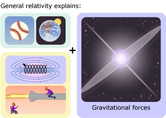

Accepted theories are the best explanations available so far for how the world works. They have been thoroughly tested, are supported by multiple lines of evidence, and have proved useful in generating explanations and opening up new areas for research. However, science is always a work in progress, and even theories change. How? We'll look at some over-arching theories in physics as examples:
- Classical mechanics
In the 1600s, building on the ideas of others, Isaac Newton constructed a theory (sometimes called classical mechanics or Newtonian mechanics) that, with a simple set of mathematical equations, could explain the movement of objects both in space and on Earth. This single explanation helped us understand both how a thrown baseball travels and how the planets orbit the sun. The theory was powerful, useful, and has proven itself time and time again in studies; yet it wasn't perfect … - Special relativity
Classical mechanics was one-upped by Albert Einstein's theory of special relativity. In contrast to the assumptions of classical mechanics, special relativity postulated that as one's frame of reference (i.e., where you are and how you are moving) changes, so too do measurements of space and time — so that, for example, a person speeding away from Earth in a spacecraft will perceive the distance of the spacecraft's travel and the elapsed time of the trip to be different than would a person sitting at Cape Canaveral. Special relativity was preferred because it explained more phenomena: it accounted for what was known about the movement of large objects (from baseballs to planets) and helped explain new observations relating to electricity and magnetism. - General relativity
Even special relativity was superseded by another theory. General relativity helped explain everything that special relativity did, as well as our observations of gravitational forces.

- Our next theory …
General relativity has been enormously successful and has generated unique expectations that were later borne out in observations, but it too seems up for a change. For example, general relativity doesn't mesh with what we know about the interactions between extremely tiny particles (which the theory of quantum mechanics addresses). Will physicists develop a new theory that simultaneously helps us understand the interactions between the very large and the very small? Time will tell, but they are certainly working on it!
All the theories described above worked — that is, they generated accurate expectations, were supported by evidence, opened up new avenues of research, and offered satisfying explanations. Classical mechanics, by the way, is still what engineers use to design airplanes and bridges, since it is so accurate in explaining how large (i.e., macroscopic) and slow (i.e., substantially slower than light) objects interact. Nevertheless, the theories described above did change. How? A well-supported theory may be accepted by scientists, even if the theory has some problems. In fact, few theories fit our observations of the world perfectly. There is usually some anomalous observation that doesn't seem to fit with our current understanding. Scientists assume that by working at such anomalies, they'll either disentangle them to see how they fit with the current theory or contribute to a new theory. And eventually that does happen: a new or modified theory is proposed that explains everything that the old theory explained plus other observations that didn't quite fit with the old theory. When that new or modified theory is proposed to the scientific community, over a period of time (it might take years), scientists come to understand the new theory, see why it is a superior explanation to the old theory, and eventually, accept the new theory.
Theory change is a community process of feedback, experiment, observation, and communication. It usually involves interpreting existing data in new ways and incorporating those views with new results. It may depend on a single definitive experiment or observation to change people's views, or it may involve many separate studies, eventually tipping the balance of evidence in favor of the new theory. The process may take some time since scientists don't always recognize good ideas right away, but eventually the scientific explanation that is more accurate will win out. This process of theory change often involves true scientific controversy, which is healthy, sparks additional research, and helps science move forward. True scientific controversy involves disagreements over how data should be interpreted, over which ideas are best supported by the available evidence, and over which ideas are worth investigating further.
SCIENTIFIC CONTROVERSY: TRUE OR FALSE?
Here, we've discussed true scientific controversy — a debate within the scientific community over which scientific idea is more accurate and should be used as the basis of future research. True scientific controversy involves competing scientific ideas that are evaluated according to the standards of science — i.e., fitting the evidence, generating accurate expectations, offering satisfying explanations, inspiring research, etc. However, occasionally, special interest groups try to misrepresent a non-scientific idea, which meets none of these standards, as inspiring scientific controversy. To learn to identify these false controversies, visit:
What controversy: Is a controversy misrepresented or blown out of proportion?, one of the tips in our Science Toolkit.